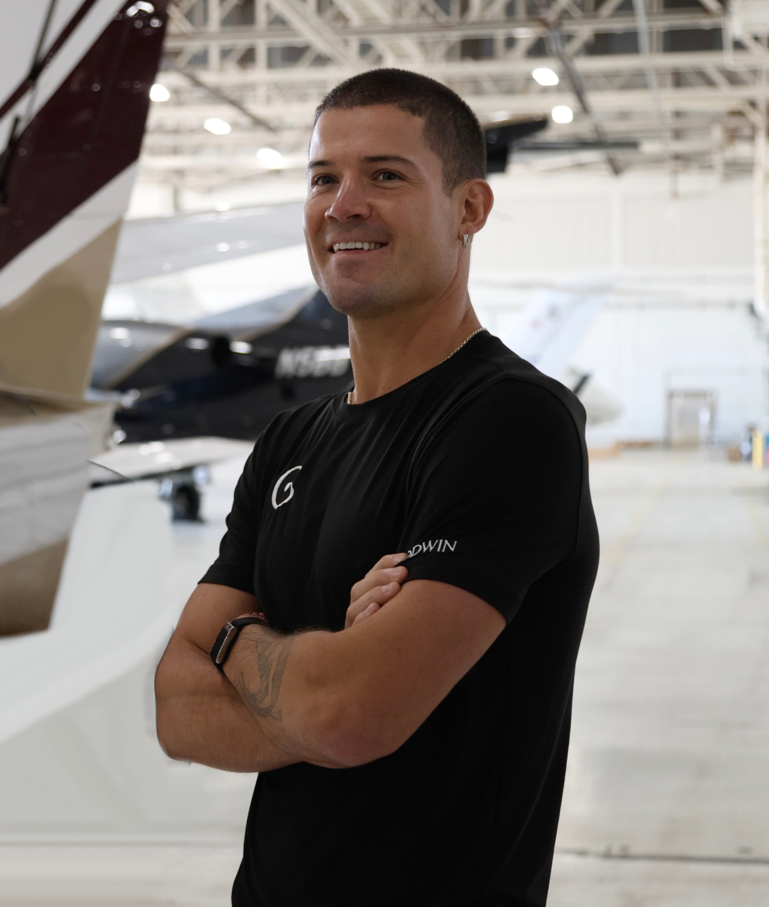

Across America
Coast-to-coast experience
Goodge has already completed a transcontinental U.S. run, giving this attempt a foundation of proven distance, weather, fatigue, and road logistics.
William Goodge is a British ultra-endurance athlete known for large-scale, purpose-led running projects. Goodwin Generated Mission America builds on that history with a state-by-state challenge designed around durability, recovery, and relentless movement.

Goodge has already completed a transcontinental U.S. run, giving this attempt a foundation of proven distance, weather, fatigue, and road logistics.
His endurance resume includes massive daily mileage and compressed multi-week efforts where consistency matters as much as speed.
Will's running is tied to the memory of his mother and to supporting people affected by cancer, turning the effort into more than a performance metric.
What separates this project from a standard race is the repeated reset. Will has to run hard, recover quickly, transfer cleanly, and do it again before the body and mind have time to fully settle.
That is why Goodwin Generated Mission America frames the athlete as part of a wider system: route planning, aviation support, medical recovery, nutrition, media, and community participation all have to work together.
Eight recent images from Will's Instagram feed, arranged in two rows of four for quick visual context.